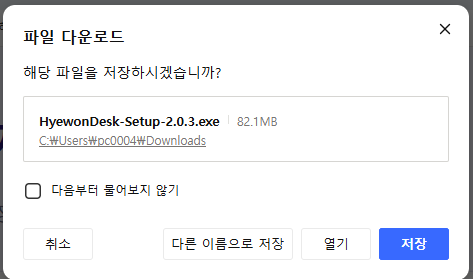
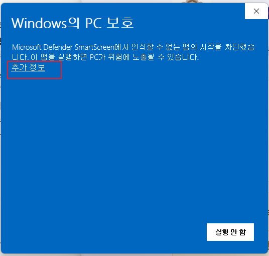
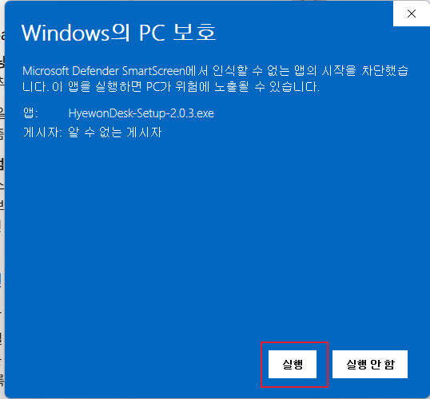
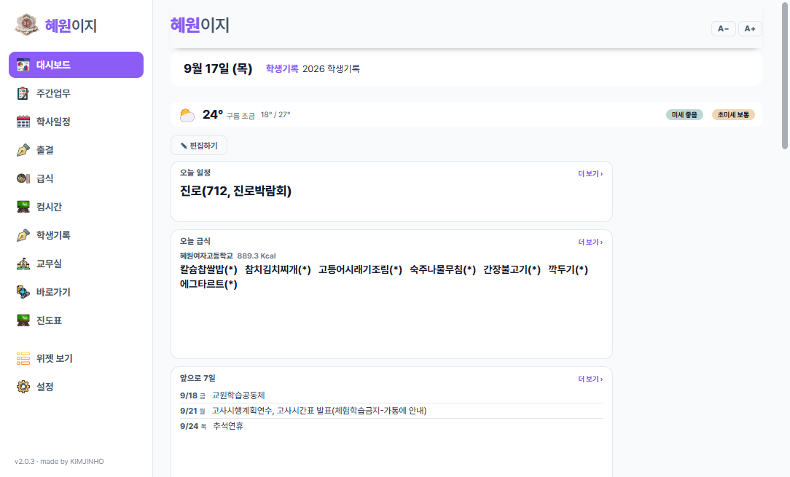
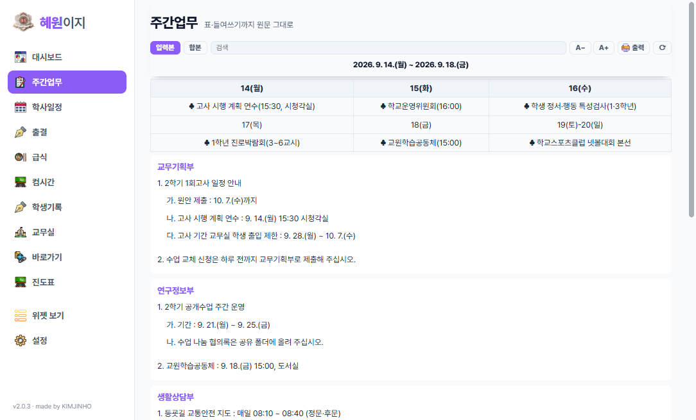
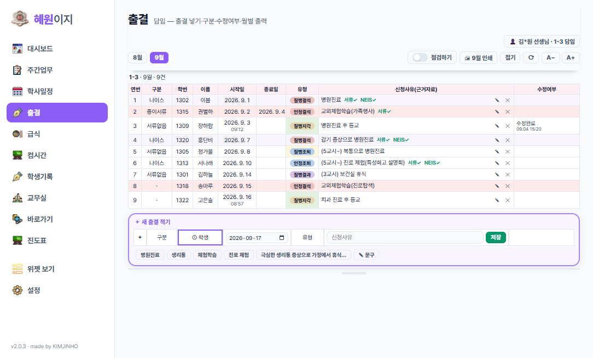
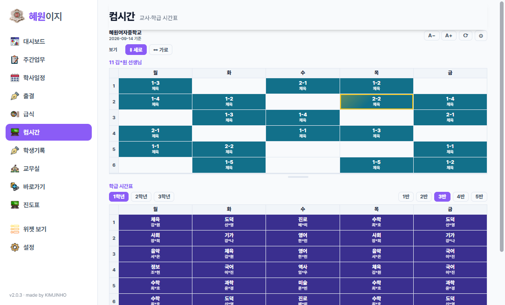

⚠️ 꼭 «크롬(Chrome)» 에서 내려받으세요
엣지(Edge)·웨일 등 다른 브라우저는 설치 파일을 받는 단계에서 막아 버리는 경우가 많습니다.
지금 다른 브라우저 로 보고 계신 것 같습니다.
이 페이지 주소를 복사해 크롬에 붙여 넣어 주세요.
주소 복사
설치하는 법
코드 서명을 하지 않은 앱이라 Windows 가 한 번 물어봅니다. 아래 순서대로 누르면 됩니다.
위 단추를 누르고 「저장」 (또는 「열기」)

받은 HyewonDesk-Setup 파일을 두 번 눌러 실행합니다.
파란 「Windows의 PC 보호」 창에서 「추가 정보」

「실행 안 함」 단추만 보여도 당황하지 마세요. 글자 추가 정보 를 누르면 단추가 하나 더 생깁니다.
「실행」 을 누르면 설치 끝

잠깐 뒤 혜원이지가 저절로 뜹니다. 바탕화면과 시작 메뉴에도 아이콘이 생깁니다.
한 번 설치하면 새 버전은 저절로 받아집니다. 다시 내려받으실 일이 없습니다.
처음 켰을 때
바탕화면에 작은 창이 뜹니다. 제목 줄을 잡아 옮기세요
톱니바퀴 ⚙️ 를 눌러 학교 와 선생님 이름 을 고릅니다
그러면 시간표·급식·주간업무가 저절로 채워집니다
출결 을 쓰시려면 «출결» 탭에서 연결 코드 (김진호에게 메신저로 받으세요)를 붙여 넣고,
나는 누구 를 고릅니다. 학년부장·교무부장·교장·교감 선생님은 확인번호도 넣습니다
창을 닫아도 꺼지지 않고 작업표시줄 오른쪽 아래 에 남아 있습니다.
제목 줄의 ⤢ 를 누르면 넓은 창 으로 크게 볼 수 있습니다.
단축키
혜원이지 창을 누른 뒤 쓰세요. 글을 적는 칸에 있을 때는 글자로 들어가므로 먹지 않습니다.
1 ~ 8 그 번째 탭으로 곧장 — 넓은 창은 왼쪽 메뉴 위에서부터(대시보드가 1),
작은 창은 위쪽 탭 왼쪽부터 셉니다. 아래 «화면 둘러보기» 의 숫자가 넓은 창 기준입니다Tab / Shift +Tab 다음 탭 / 앞 탭 ` 전체화면 켜기·끄기 — 숫자 1 왼쪽, Esc 바로 아래의
물결(~) 키 입니다. 한 번 더 누르면 원래 크기로Esc 창 숨기기 — 꺼지지 않고 작업표시줄에 남습니다⊞ +1 어느 화면에서든 혜원이지 부르기 — 작업표시줄에 붙여 두면 됩니다(바로 아래 설명)
작업표시줄에 붙여 두고 ⊞ +1 로 부르기
자주 쓰시면 이렇게 해 두세요. 어느 화면에 있든 키 두 개 로 곧바로 올라옵니다.
⊞
윈도우
+
1
함께 누르면
⊞
안 셈
1
2
3
← 앱 아이콘만 왼쪽부터 셉니다
시작 단추를 누르고 혜원이지 를 찾습니다 (바탕화면 아이콘도 됩니다)마우스 오른쪽 클릭 → 작업 표시줄에 고정
안 보이면 「추가 옵션 표시」나 「자세히」 안에 있습니다
작업표시줄에 생긴 아이콘을 왼쪽 끝으로 끌어다 놓습니다
이제 ⊞ +1 로 부릅니다
⊞ 는 스페이스바 왼쪽의 창문 모양 키입니다
몇 번째에 두었는지에 따라 숫자가 바뀝니다 — 두 번째면 ⊞ +2 ,
세 번째면 ⊞ +3 . 시작·검색·위젯 단추는 세지 않고 앱 아이콘만 셉니다.
혜원이지는 창을 닫아도 꺼지지 않으므로, ⊞ +1 을 누르면
새로 켜지는 것이 아니라 있던 창이 그대로 다시 올라옵니다.
화면 둘러보기
넓은 창으로 본 모습입니다. 그림 속 이름·자료는 보여 드리려고 지어낸 것 입니다. 그림을 누르면 크게 보입니다.
1 대시보드오늘 볼 것을 한눈에. 자주 쓰는 화면은 ☆ 를 눌러 맨 위로 모아 둡니다.

2 주간업무표·들여쓰기까지 원문 그대로. 지난 주·다음 주도 넘겨 보고, 인쇄도 됩니다.

4 출결학년 출결목록 시트를 앱에서. 담임은 적기·고치기·월별 인쇄, 학년부장은 수정요청, 관리자는 보기.
«점검하기» 로 서류·출석부·NEIS 를 체크합니다.

6 컴시간내 시간표와 학급 시간표. 이번 주 바뀐 수업(보강·교체)까지 반영됩니다.

안 쓰는 탭은 설정에서 꺼 두거나 순서를 바꿀 수 있습니다. 그러면 숫자도 그 순서를 따릅니다.
최근 새로워진 것
NEW 도구상자 «영상 내려받기» — 유튜브 주소를 붙여 넣고 화질(1080p·720p·480p·소리만)을 골라 이 컴퓨터에 저장합니다.
수업·연수 자료처럼 이용 허락이 되는 영상에만 써 주세요NEW «혜원이지 폰» 타일 — 바로가기 화면 맨 앞. 누르면 폰 설치용 QR 이 크게 뜹니다NEW 런처보드 정리 — 카드를 끌어서 «함께 쓰는 중» 과 «나만 보기» 사이로 옮길 수 있습니다학사일정·급식은 «오늘» 기준 — 어제까지는 «지난 일정·지난 급식» 한 줄로 접혀 있고, 오늘이 눈에 띄게 강조됩니다. 필요하면 펼쳐 봅니다창 옮기기 — 맨 위 머리 줄의 단추가 아닌 곳을 잡고 끌면 창이 부드럽게 옮겨집니다도구상자 — PDF 편집기 · 사진 줄이기 · 랜덤 뽑기·모둠 편성 · QR 생성기 · 수업 타이머 · 계산기 · 등급별 인원 예측
2.0 에서 새로워진 것
출결 — 담임 선생님은 우리 반 출결을 앱에서 적고 고치고 월별로 인쇄합니다.
학년부장님은 학년 모든 반을, 교장·교감·교무부장님은 전 학년을 볼 수 있습니다이름이 다시 «혜원이지» 로 — 설정·자료는 그대로 이어집니다인쇄가 안 되던 문제 — 학교 PC 에서 인쇄 창이 안 뜨면 브라우저로 넘어가 거기서 인쇄합니다크게·작게 — A− A+ 를 누르면 메뉴 단추까지 함께 커지고, 화면 아래 손잡이를 끌면 그 탭이 통째로 커집니다컴시간 바뀐 수업 (보강·교체)을 더 정확하게 · 주간업무 속 표는 가운데 정렬
⚠️ 갤럭시(삼성 폰)는 꼭 이렇게 하세요
카카오톡·문자 안에서 주소를 눌러 열면 «앱 설치» 가 안 되는 경우가 많습니다.
위 «📋 주소 복사» 로 주소를 복사합니다.
삼성 인터넷 (또는 크롬) 브라우저 앱을 직접 열고 주소창에 붙여 넣어 이동합니다.그 상태에서 메뉴 → 홈 화면에 추가 를 눌러야 앱으로 설치 됩니다.
설치하는 법 — 홈 화면에 추가
아래 그림처럼 브라우저 메뉴에서 «홈 화면에 추가» 를 누르면 바탕 화면에 혜원이지 아이콘이 생기고, 눌렀을 때 주소창 없이 앱처럼 열립니다. 갤럭시는 «삼성 인터넷» 으로 열어도 이렇게 앱처럼 설치할 수 있습니다.
안드로이드 (크롬)
arete929.github.io/hyewon_mobile
새 탭 기록 다운로드 북마크 홈 화면에 추가
(또는 «앱 설치»)
크롬에서 주소를 연 뒤 오른쪽 위 ⋮ → 홈 화면에 추가 (또는 «앱 설치») 아이폰 (사파리)
혜원이지 폰
링크 복사 즐겨찾기에 추가 홈 화면에 추가 ＋
검색에서 찾기 사파리에서 주소를 연 뒤 아래 공유 단추 → 홈 화면에 추가 . 아이폰은 꼭 사파리 로 여세요 삼성 인터넷 (갤럭시)
arete929.github.io/hyewon_mobile
새 탭 북마크 현재 페이지 추가
다운로드 ← → ⌂ ▢
삼성 인터넷에서 주소를 연 뒤 아래 오른쪽 ≡ 메뉴 → 현재 페이지 추가 → 홈 화면 . 주소창에 «설치» 아이콘이 보이면 그것을 눌러도 됩니다
※ 이 그림은 순서를 보여 드리려고 그린 안내도입니다. 폰 기종·브라우저 버전에 따라 글자 위치는 조금 다를 수 있습니다.
처음 열면
암호 입력 — 처음 한 번 암호를 넣으라는 화면이 나옵니다. 암호는 김진호 선생님께 메신저로 받으세요 . 앱을 열 때마다 넣고 들어옵니다.내 이름 고르기 — «시간표» 화면에서 내 이름을 한 번 고르면 오늘 수업과 내 시간표가 보입니다.
화면 둘러보기
폰 화면입니다. 그림 속 이름·자료는 보여 드리려고 지어낸 것 입니다. 그림을 누르면 크게 보입니다.
이 밖에 출결 (담임 선생님이 우리 반 출결 보기·적기), 문자 문구 , 학사일정 , 주간업무 , 설정 화면이 있습니다.
최근 새로워진 것 (폰)
NEW 아래 메뉴가 «4칸 + 더보기» — 홈·시간표·출결·급식 네 칸과 더보기. 내가 자주 쓰는 화면으로 바꿀 수 있습니다출결 입력 — 지각·조퇴·결과는 해당 교시를 고르고, 신청 사유는 예시 문구를 눌러 바로 넣습니다